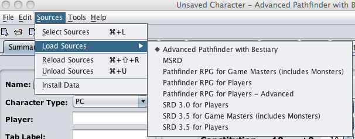

The Sources menu is used to select, load, reload, and unload data sets within PCGen for the use of the user. The menu options are as follows:
The Select Sources command will call up the Select Sources window where you can select and load data sets from the large collection of data sets distributed by PCGen.

The
Load Sources
command presents a list of
standard pre-configured sets. These sets consist of the
following:
You can add your own custom configurations to this list through the Select Sources window.
The Reload Sources command will reload the current sources.
The Unload Sources comman unloads the current sources.
The Install Data command allows the installation of data sets completed and distributed by the PCGen team as Out-of-Cycle (OOC) data sets. This is also particularly useful for GMs who have created their own campaign files as it simplifies the process of sharing the sets with their players.